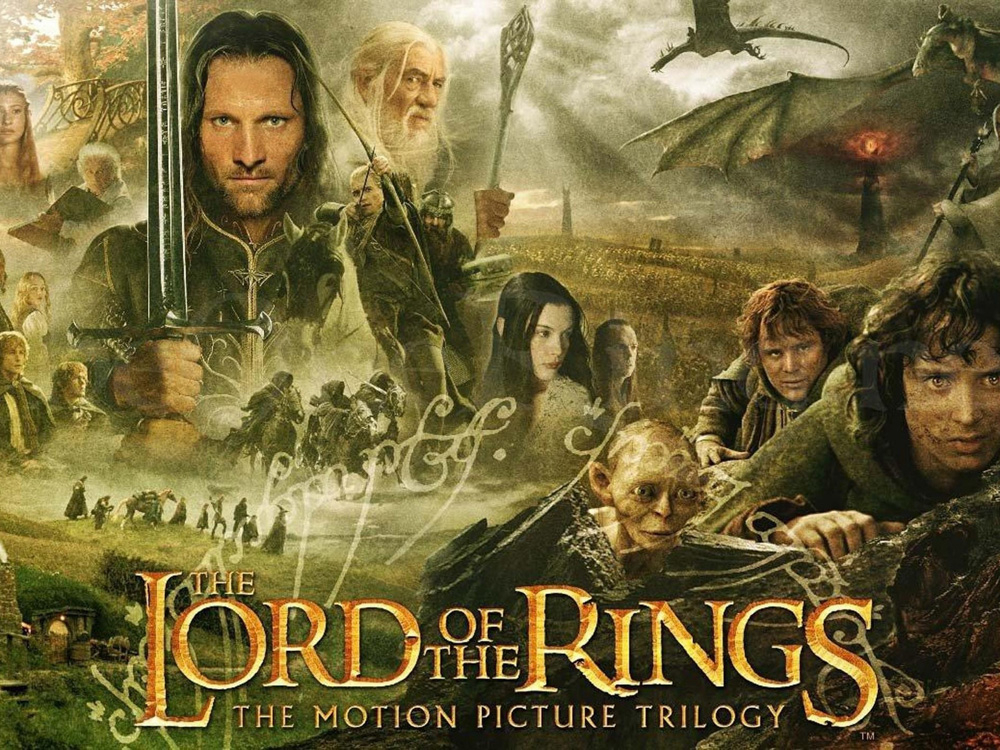
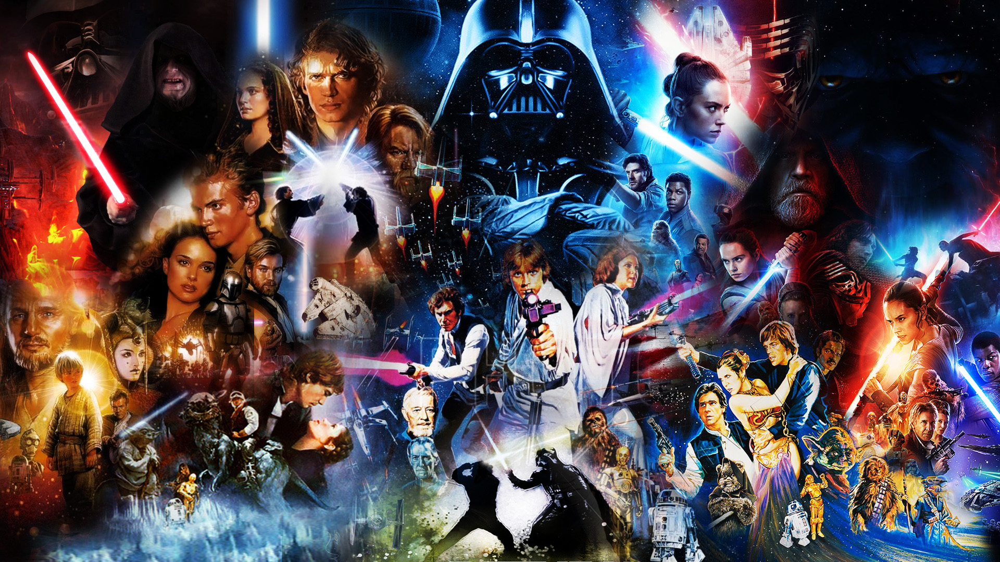
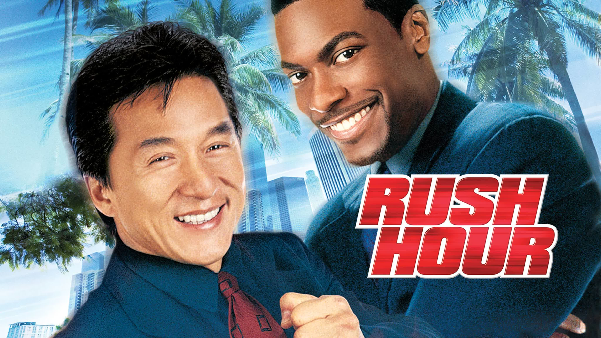

|  |
Трилогия "Властелин Колец": 2001 — Властелин колец: Братство Кольца (англ. The Lord of the Rings: The Fellowship of the Ring) 2002 — Властелин колец: Две крепости (англ. The Lord of the Rings: The Two Towers) 2003 — Властелин колец: Возвращение короля (англ. The Lord of the Rings: The Return of the King)
Хронологическая предыстория трилогии «Властелин колец» — кинотрилогия «Хоббит».
«Властелин колец» является одним из самых крупных проектов в истории кино. Его реализация заняла восемь лет; все три фильма были сняты одновременно в Новой Зеландии, родной стране Питера Джексона. У каждого из фильмов трилогии есть специальная расширенная версия, выпущенная на DVD спустя год после выхода соответствующей театральной версии. Фильмы следуют за основной сюжетной линией книги, но опускают некоторые существенные элементы повествования, включают дополнения и отклонения от исходного материала.
|
|  |
«Звёздные во́йны» — медиафраншиза в жанре эпическая космическая опера, включающая в себя 12 художественных фильмов (9 эпизодов основной саги, также известна как «Сага Скайуокеров», 2 фильма «историй» и 1 анимационный), а также игровые и анимационные сериалы, игровые телефильмы, документальные фильмы, книги, комиксы, видеоигры, аттракционы, игрушки и прочие произведения, созданные в рамках единой фантастической вселенной «Звёздных войн», задуманной и реализованной американским режиссёром Джорджем Лукасом в конце 1970-х годов, позднее расширенной.
«Звёздные войны» занимают второе место в истории по общим кассовым сборам среди всех кинофраншиз, уступая только серии фильмов кинематографической вселенной Marvel. В 2020 году общая стоимость франшизы «Звёздных войн» оценивалась в 70 миллиардов долларов США и в настоящее время она является пятой самой кассовой медиафраншизой.
|
|  |
Американский комедийный боевик с легендами жанра – Джеки Чаном и Крисом Такером. Эта обычная полицейская история началась с похищения дочери чиновника из Китая. На поиски преступников брошены лучшие кадры ФБР, но убитый горем отец требует вызвать из Гонконга инспектора Ли, своего давнего знакомого.
Полицейские Лос-Анджелеса восприняли данную просьбу как личное оскорбление и признание их профессиональной несостоятельности. Чтобы китайский полицейский не совал свой нос в расследование, в управлении распорядились дать ему в напарники горе-полицейского Картера. Такая «команда» обречена на провал. Но дело принимает совсем неожиданный оборот…
|